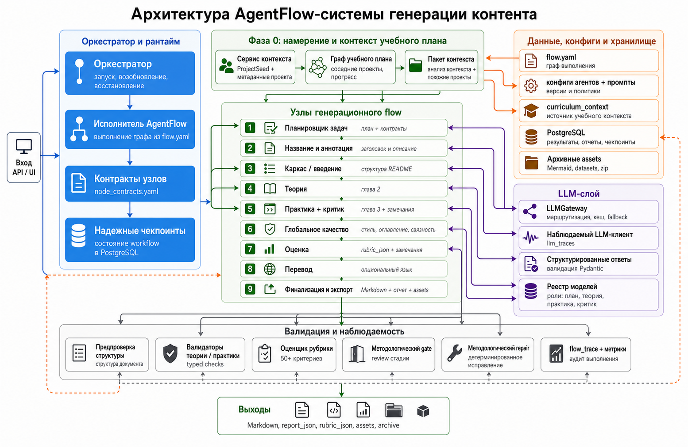

Content Generator: внутренняя ИИ-модель генерации, проверки и перевода
Документ описывает не интерфейс, а принцип работы ИИ-контура: как сервис превращает учебный план и методические параметры в README, чек-лист, проверку качества, точечные правки и перевод.

1. Цель ИИ-контура
ИИ-контур Content Generator должен создавать учебный проект не как свободный текст, а как управляемый набор артефактов с проверяемой структурой.
2. Архитектурные принципы
| Принцип | Как реализован | Зачем нужен |
|---|---|---|
| Управляемая последовательность | Генерация идет по заранее описанным шагам: контекст, план задач, название, структура, теория, практика, проверка, сборка. | Делает запуск воспроизводимым и позволяет восстановить состояние после нештатной остановки. |
| Контракт на каждом шаге | Для шага определены входы, выходы, роль модели, проверки и политика повторной попытки. | Нельзя незаметно добавить шаг или поле, которое сломает соседние части. |
| Структурированный ответ | Там, где важна форма данных, ответ модели приводится к Pydantic-схеме или аналогичному типизированному объекту. | Ошибки структуры ловятся кодом, а не методологом в финальном тексте. |
| Детерминированное применение правок | Модель предлагает содержимое, но замена раздела, обновление ссылок и пересчет критериев выполняются кодом. | Правка выбранного раздела не должна случайно менять соседние разделы. |
| Проверки после генерации | README проверяется по структуре, главам, практике, сторителлингу и заключению. | Качество видно в отчете, а не оценивается “на глаз”. |
| Наблюдаемость | Для каждого шага сохраняются статус, длительность, ошибки, расход модели и краткий результат. | Можно понять, где возникла ошибка, сколько стоил запуск и что ухудшилось. |
3. Схема работы ИИ-контура
Схема показывает основной поток данных: входной контракт нормализуется, затем проходит через последовательные роли ИИ, детерминированные проверки, методологические решения и финальную сборку. Зеленая пунктирная линия показывает обратную связь от проверок и правок к выбранному фрагменту.
4. Входной контракт ИИ
Сервис не отправляет модели “сырой экран формы”. Сначала входные данные приводятся к единому проектному описанию.
| Группа данных | Смысл | Как используется |
|---|---|---|
| Учебный план | Строки программы, соседние проекты, тематический блок, ожидаемые результаты. | Определяет место проекта в программе и ограничения содержания. |
| Параметры проекта | Тип проекта, уровень аудитории, направление, название, описание, инструменты. | Влияют на глубину объяснений, стиль задач и формат артефактов. |
| Сторителлинг | Рабочая ситуация, SJM, роль, кейс или сквозная история. | Связывает практику, теорию и критерии в единую линию. |
| Методические правила | Структура README, шаблон задания, p2p-проверяемость, тональность Школы 21. | Ограничивают модель и задают формат итогового материала. |
| Дополнительные материалы | Файлы, фрагменты, примеры и опорные источники. | Используются как контекст, но не должны превращаться в готовое решение для студента. |
5. Общее состояние проекта
Каждый шаг генерации читает и дополняет общее состояние проекта. Это состояние хранит не только Markdown, но и структурные данные, которые нужны следующим шагам.
| Данные состояния | Что содержат |
|---|---|
| Описание проекта | Нормализованные входные параметры, уровень аудитории, тип проекта, язык и сценарная рамка. |
| Анализ контекста | Краткое понимание места проекта в программе и связей с соседними проектами. |
| План практики | Количество задач, сложность, цепочка артефактов и ожидаемые результаты. |
| Скелет README | Название, аннотация, главы, оглавление и будущие разделы. |
| Теоретические части | Разделы главы 2, их темы, объем, примеры, таблицы и диаграммы. |
| Практические задачи | Задания, пути файлов, формат сдачи, проверяемые признаки и связи между задачами. |
| Проверка качества | Оценка по критериям, предупреждения, непройденные пункты и рекомендации. |
| Отчет и архив | Финальный README, чек-лист, дополнительные файлы, метаданные запуска и сводка. |
6. Цепочка генерации учебного проекта
Генерация состоит из линейной цепочки шагов. Русский язык является базовым, поэтому перевод как отдельный шаг выполняется только при необходимости.
| Шаг | Роль шага | Вход | Выход |
|---|---|---|---|
| Подготовка контекста | Собрать чистое описание проекта из формы, учебного плана и материалов. | Параметры проекта, CSV, файлы. | Нормализованное описание и сводка контекста. |
| Планирование практики | Решить, сколько задач нужно и как они связаны. | Описание проекта, уровень аудитории, сторителлинг. | План задач, цепочка артефактов, ожидаемые результаты. |
| Название и аннотация | Создать короткий вход в проект. | Описание проекта и контекст. | Название и аннотация. |
| Структура README | Создать главы, оглавление и первую главу. | Название, аннотация, план практики. | Черновой README и структурная карта разделов. |
| Теория | Написать главу 2 с примерами, таблицами и диаграммами. | Черновой README, план практики, сторителлинг. | Теоретические разделы и обновленный README. |
| Практика | Написать задания и формат сдачи. | README с теорией, план задач, цепочка артефактов. | Глава 3, материалы, задачи и замечания проверяющего. |
| Глобальная редактура | Выравнять стиль, убрать повторы и случайные вставки. | Полный README. | Отредактированный README. |
| Оценка качества | Посчитать критерии и подготовить отчет. | Итоговый README. | Оценка, предупреждения, непройденные критерии. |
| Перевод | Перевести результат, если выбран не русский язык. | README и целевой язык. | Переведенный Markdown с сохранением структуры. |
| Сборка результата | Собрать итоговые файлы. | README, задачи, критерии, материалы. | `README.md`, `check-list.yml`, отчет и архив. |
7. AgentFlow и роли ИИ
Генератор устроен как AgentFlow-система: есть оркестратор, исполняющий граф шагов, и набор специализированных ИИ-ролей. Это не чат, который “пишет весь проект сразу”, а управляемый контур выполнения, где каждый шаг имеет входной контракт, ожидаемый результат, правила проверки и способ восстановления.
Как устроен один агентный узел
| Часть узла | Что делает | Зачем это нужно |
|---|---|---|
| Входной контракт | Берет только нужные поля состояния: контекст проекта, план задач, текущий README, выбранный раздел или отчет проверки. | Модель не получает лишний шум и меньше переносит служебный текст в результат. |
| Роль и политика | Фиксирует, кем является модель на этом шаге: планировщик, автор теории, редактор, критик, переводчик. | Одна и та же LLM работает в разных режимах, но с разными ограничениями и критериями успеха. |
| Prompt-пакет | Собирается из системных правил, данных проекта, методических правил, текущей цели и запретов. | Инструкция получается воспроизводимой и объяснимой, а не собирается вручную в каждом вызове. |
| Структурированный выход | Для критичных шагов агент возвращает не произвольный текст, а объект: план, список разделов, typed patch, отчет критериев. | Результат можно валидировать кодом и безопасно передать следующему узлу. |
| Проверка и repair | После ответа запускаются validators, rubric checks и при необходимости узкая попытка исправления. | Ошибки формата и структуры ловятся до того, как попадут в финальный README. |
| Контрольная точка | Успешный результат сохраняется вместе с метаданными шага и краткой сводкой. | Запуск можно восстановить, продолжить или показать методологу на контрольной точке. |
Основные роли
| Роль | Зона ответственности | Контракт результата | Контроль качества |
|---|---|---|---|
| ContextAgent | Понимает место проекта в программе, вытаскивает смысл учебного плана и собирает рабочий контекст. | Краткое описание проекта, учебный фокус, связи с соседними проектами, сценарная рамка. | Проверка полноты входных параметров и отделение фактов от вспомогательных заметок. |
| PlanningAgent | Проектирует практическую часть: число задач, зависимость артефактов, сложность и проверяемые результаты. | Типизированный план задач с путями файлов, expected outcome и цепочкой артефактов. | Проверка связей задач, уровня аудитории, p2p-проверяемости и соответствия сценарной рамке. |
| OutlineAgent | Создает название, аннотацию, оглавление, первую главу и каркас будущего README. | Markdown-каркас с обязательными заголовками и навигацией. | Проверка Markdown-ссылок, структуры глав, названий и отсутствия готового решения. |
| TheoryAgent | Пишет главу 2: объяснения, таблицы, Mermaid-диаграммы, примеры и переходы к практике. | Список теоретических разделов с объемом, связью с задачами и визуальными блоками. | Проверка объема, смысловой точности заголовков, единого фокуса и корректности диаграмм. |
| PracticeAgent | Формирует задания, ожидаемые результаты, формат сдачи, материалы и критерии практики. | Глава 3 с заданиями, путями артефактов, observable outcomes и связями между задачами. | Проверка шаблона задания, явного результата, отсутствия готовых ответов и целостности путей. |
| CriticAgent | Смотрит на результат как методологический проверяющий и переводит замечания в критерии качества. | Rubric report: пройдено, предупреждение, не пройдено, пояснение и область исправления. | Детерминированные проверки структуры дополняются содержательной оценкой текста. |
| RepairAgent | Исправляет выбранный раздел или общий дефект без полной пересборки проекта. | Typed patch с областью применения, операцией и новым содержанием. | Патч применяется кодом, затем пересчитываются содержание, критерии и отчет изменений. |
| TranslatorAgent | Переводит документы, Markdown, таблицы, формулы, диаграммы, субтитры и видео-текст. | Переведенный материал с сохранением структуры, защищенных блоков и письменности языка. | Защита кода/формул/таблиц, проверка структуры и повторная обработка спорных фрагментов. |
Что делает систему особенно сильной
Цикл работы AgentFlow
| Стадия | Действие | Результат |
|---|---|---|
| 1. Подготовить | Оркестратор выбирает узел, собирает контекст и prompt-пакет. | Готовый запрос к роли ИИ с понятными ограничениями. |
| 2. Сгенерировать | LLM-слой вызывает подходящую модель и получает текст или структурированный объект. | Первичный результат узла. |
| 3. Проверить | Код валидирует схему, Markdown, ссылки, критерии и связь с текущим состоянием. | Принятый результат, предупреждение или запрос на исправление. |
| 4. Сохранить | Успешный результат записывается в состояние запуска и журнал выполнения. | Контрольная точка, к которой можно вернуться. |
| 5. Передать дальше | Следующий узел получает уже проверенные данные, а не сырой ответ модели. | Последовательная и воспроизводимая цепочка работы. |
8. Вызов языковой модели
Вызов модели отделен от бизнес-логики. Код выбирает модель по роли задачи, передает подготовленные данные, проверяет ответ и решает, нужна ли повторная попытка.
Маршрутизация моделей
- Для каждой роли задан список допустимых моделей.
- Если основная модель недоступна, можно использовать резервную.
- Ошибки лимита, токена и тайм-аута должны превращаться в понятное сообщение.
- Расход токенов и длительность сохраняются для анализа стоимости.
Политика повторных попыток
| Ситуация | Поведение |
|---|---|
| Ответ не соответствует схеме | Запускается попытка исправления или повторный запрос с указанием нарушения. |
| Модель не ответила вовремя | Шаг помечается как временно неуспешный, пользователь видит понятный статус. |
| Лимит модели исчерпан | Используется резервная модель или показывается сообщение о недоступности выбранного ИИ. |
| Ответ ухудшил критерии | Результат не применяется автоматически; методолог получает отчет ухудшений. |
9. Подсказки модели
Подсказка модели собирается из нескольких слоев. В ней не должно быть случайной смеси всех данных: каждый слой отвечает за свой смысл.
| Слой | Что содержит | Почему отдельно |
|---|---|---|
| Системные правила | Роль модели, запреты, формат ответа, тональность и ограничения. | Не меняются от проекта к проекту и задают границы поведения. |
| Данные проекта | Название, описание, уровень аудитории, тема, инструменты и сторителлинг. | Определяют содержание конкретного проекта. |
| Методические правила | Структура README, шаблон задания, требования к проверяемости. | Ограничивают форму результата. |
| Контекст предыдущих шагов | План задач, уже созданные разделы, связи между артефактами. | Сохраняет целостность между главами. |
| Локальная инструкция | Что нужно сделать на текущем шаге. | Сужает задачу модели и уменьшает случайные изменения. |
10. Структурированный ответ и схемы
Для критичных шагов модель должна возвращать не произвольный текст, а структуру, которую можно проверить и сохранить.
| Объект | Что фиксирует |
|---|---|
| Описание проекта | Единый набор входных параметров после очистки и нормализации. |
| План задач | Количество задач, уровень сложности, связи и ожидаемые артефакты. |
| Карта структуры | Главы, разделы, заголовки, содержание и обязательные блоки. |
| Теоретическая часть | Список разделов главы 2, их темы, объем и связь с практикой. |
| Практическая задача | Название, ситуация, ожидаемый результат, формат сдачи и путь файла. |
| Точечная правка | Область изменения, операция, новый текст, структурные зависимости. |
| Отчет проверки | Статус критерия, комментарий, доказательство и рекомендация. |
11. Проверки и безопасные исправления
Проверки делятся на два типа: структурные и смысловые. Структурные проверки должны быть максимально детерминированными, смысловые могут использовать модель или правила, но всегда возвращают отчет.
| Проверка | Пример | Кто исправляет |
|---|---|---|
| Структура README | Есть заголовок, содержание, главы 1-3, заключение. | Код может восстановить часть структуры или показать ошибку. |
| Ссылки Markdown | Оглавление ведет на реальные заголовки. | Код пересчитывает ссылки после изменения структуры. |
| Формат заданий | Есть “Что нужно сделать”, “Что должно получиться”, “Формат сдачи”. | Модель переписывает содержимое, код проверяет наличие блоков. |
| Проверяемость результата | Результат можно увидеть, открыть, сравнить или проверить другим студентом. | Модель улучшает формулировку, критерий фиксирует замечание. |
| Единый фокус | Теория и практика не уходят в чужой кейс. | Критерий дает предупреждение, методолог уточняет правку. |
| Диаграммы | Синтаксис Mermaid корректен, текст читается, блок не ломает README. | Код санитизирует очевидные проблемы, модель может перегенерировать упрощенную схему. |
12. Методологический режим
Методологический режим добавляет ручные решения в ключевых контрольных точках. Он не меняет принцип генерации: каждый этап по-прежнему имеет вход, выход и проверку.
Контрольная точка - это сохраненный момент генерации, где методолог видит промежуточный результат и выбирает дальнейшее действие.
Что сохраняется на контрольной точке
- Название текущего этапа.
- Содержимое для проверки.
- Краткое объяснение, что именно нужно проверить.
- Доступные области правки.
- История решений методолога.
- Подготовленное сравнение изменений, если правка уже создана.
Решения методолога
| Решение | Что делает система |
|---|---|
| Продолжить | Фиксирует текущий результат и запускает следующий шаг. |
| Редактировать | Связывает сообщение методолога с выбранной областью и строит правку. |
| Сравнить | Показывает исходный и измененный вариант до применения. |
| Принять | Применяет подготовленную правку и обновляет состояние проекта. |
| Остановить | Завершает запуск без потери уже сохраненной истории. |
13. Точечная правка готового README
Точечная правка устроена как “от схемы к применению”: сначала фиксируется область изменения, затем строится новый фрагмент, потом код применяет его к документу и пересчитывает проверки.
- Пользователь выбирает один или несколько разделов README.
- Для каждого раздела задает “что исправить” и “что сохранить”.
- Общая правка добавляется как дополнительное ограничение ко всем выбранным разделам.
- Модель генерирует новый вариант только для разрешенной области.
- Код заменяет, добавляет или удаляет блоки в Markdown.
- Содержание, номера и ссылки обновляются, если изменилась структура.
- Критерии пересчитываются после применения.
- Если качество ухудшилось, пользователь видит предупреждение и список ухудшений.
14. Генерация check-list.yml
Чек-лист строится из финального README и практических задач. Источник истины - принятый итоговый документ, а не промежуточный черновик.
| Шаг | Что извлекается |
|---|---|
| Разбор практики | Задания, ожидаемые результаты, формат сдачи и пути файлов. |
| Построение проверок | Наблюдаемые признаки, которые проверяющий студент может подтвердить. |
| Согласование с README | Проверки должны соответствовать формулировкам заданий и не требовать лишнего. |
| Сериализация | Итог сохраняется как `check-list.yml` и попадает в архив результата. |
15. Проверка README по критериям
Проверка нужна не для автоматического запрета генерации, а для управляемой доработки. Методолог видит, что именно ухудшилось и какие правки нужны.
Группы критериев
| Группа | Что проверяет |
|---|---|
| Структура документа | Заголовок, содержание, главы, заключение и ссылки. |
| Глава 1 | Введение, инструкция и понятный вход в проект. |
| Глава 2 | Теория, объем разделов, определения, примеры и связь с проектом. |
| Глава 3 | Практические задания, ожидаемые результаты, артефакты и проверяемость. |
| Сторителлинг | Единый нарративный фокус между введением, теорией и практикой. |
| Финальное завершение | Заключение завершает текущий проект без анонса следующего. |
Статусы
| Статус | Значение |
|---|---|
| Пройден | Критерий выполнен. |
| Предупреждение | Есть замечание по качеству, но это не повод автоматически откатывать результат. |
| Не пройден | Нарушение мешает принять README без правки. |
16. Перевод документов и видео
Переводчик работает как отдельная последовательность обработки: извлечение текста, защита структурных блоков, перевод, проверка, восстановление структуры и выдача результата.
Документы
- Из файла извлекается текст и структура.
- Markdown, таблицы, формулы, код, пути файлов и диаграммы помечаются как защищенные блоки.
- Текст разбивается на части по разделам, а не по случайной длине.
- Модель переводит только разрешенные текстовые фрагменты.
- Код проверяет, что структура не повреждена.
- Для таджикского, кыргызского и узбекского проверяется письменность.
Видео
- Из видео извлекается аудио.
- Речь превращается в текстовые сегменты.
- Сегменты переводятся с сохранением временных меток.
- Формируются субтитры VTT, SRT и ASS.
- При необходимости собирается видео с встроенными субтитрами.
Письменность языков
| Язык | Ожидаемая письменность |
|---|---|
| Таджикский | Кириллица. |
| Узбекский | Латиница. |
| Кыргызский | Кириллица. |
17. Наблюдаемость ИИ-контура
Для production-качества важно видеть не только финальный текст, но и путь его получения.
| Сигнал | Для чего нужен |
|---|---|
| Статус шага | Понять, где находится запуск и на каком шаге возникла ошибка. |
| Длительность шага | Находить медленные участки генерации и перевода. |
| Расход модели | Считать стоимость запуска и сравнивать модели. |
| Версия подсказки | Понимать, какая инструкция модели дала конкретный результат. |
| Отчет критериев | Сравнивать качество до и после правки. |
| Отчет точечной правки | Видеть выбранную область, примененное изменение и новые предупреждения. |
| Журнал перевода | Понимать, где завис документ или видео, и какой фрагмент не прошел проверку. |
18. Ошибки и восстановление
Запуск должен оставаться управляемым даже при нештатной ситуации: уже созданные данные сохраняются, статус шага понятен, а новый результат применяется только после проверки.
| Ситуация | Что фиксируется | Поведение системы |
|---|---|---|
| Модель вернула не ту структуру | Нарушение схемы ответа. | Ответ отклоняется, запускается исправление или повторная попытка. |
| Процесс остановился на контрольной точке | Сохраненное состояние последнего успешного шага. | Состояние сохраняется и может быть восстановлено. |
| Правка ухудшила критерии | Список критериев, которые получили худший статус. | Показывается предупреждение, результат не применяется без решения человека. |
| Диаграмма не читается | Сообщение рендера или слишком плотная схема. | Показывается понятная ошибка, доступен исходный блок и повторная генерация схемы. |
| Перевод завис | Статус задачи, последний обработанный фрагмент и сообщение модели. | Статус задачи сохраняется, ошибка переводится в понятное сообщение. |
| Недоступна выбранная модель | Код ответа провайдера и роль, для которой не удалось получить результат. | Используется резервная модель или выводится понятное сообщение о лимите. |
19. Наборы проверок качества ИИ
Качество ИИ-контура нельзя проверять только ручным просмотром. Нужны регулярные наборы примеров, которые фиксируют регрессии в генерации, проверке, точечных правках и переводе.
| Набор | Что должен ловить |
|---|---|
| Точечная правка | Правка одной секции не портит соседние секции, содержание и ссылки. |
| Изменение структуры | Добавление или удаление главы обновляет содержание, номера и критерии. |
| Качество README | После генерации есть обязательные главы, заключение, проверяемые задания и единый фокус. |
| Диаграммы | Схемы читаются, не ломают Markdown и не становятся слишком крупными. |
| Перевод | Таблицы, формулы, код, диаграммы, субтитры и письменность языка сохраняются. |
| Стоимость и время | Разные модели сравниваются по качеству, длительности, расходу и управляемости. |